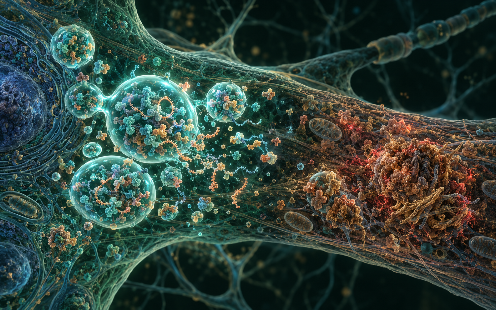
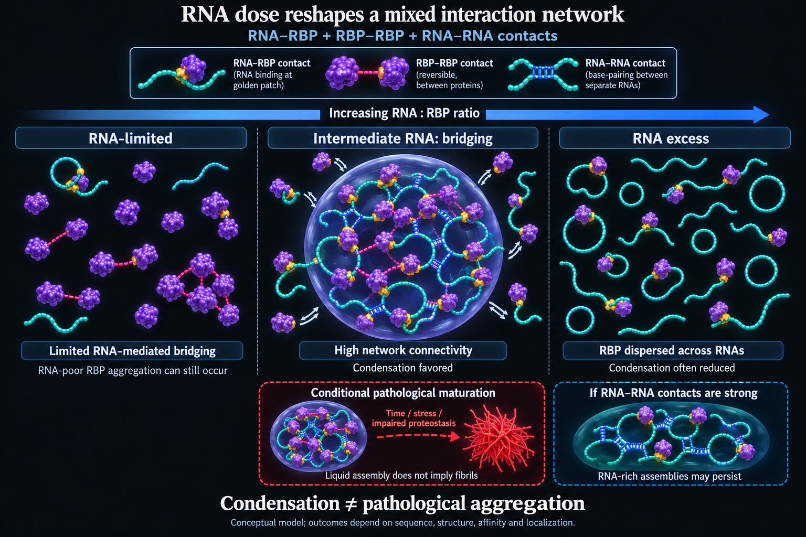
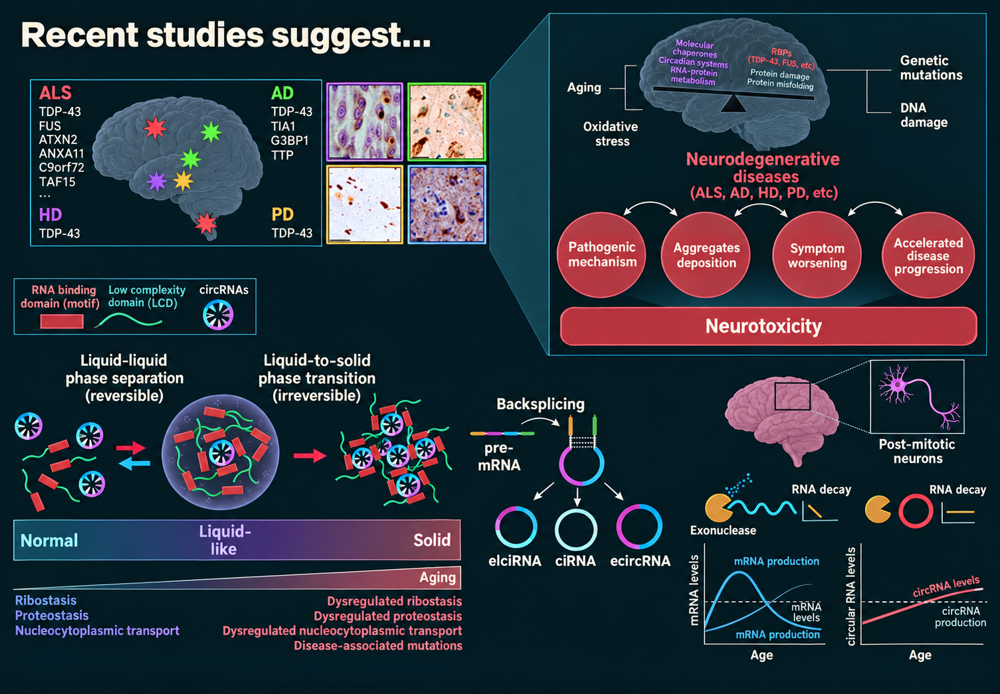
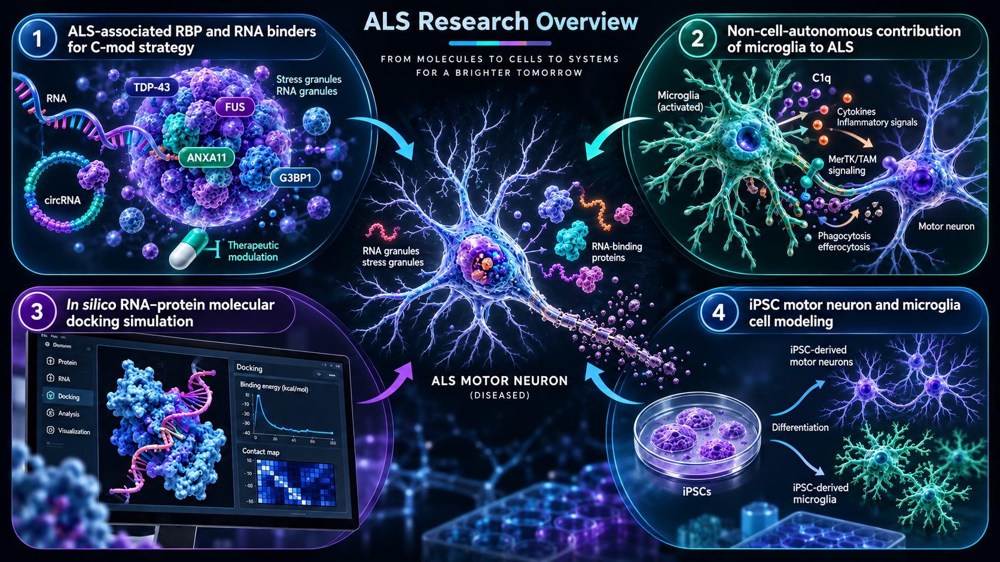
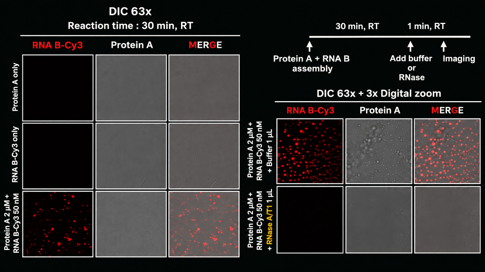

미세아교세포 기능
뇌 노화와 신경퇴행에서 미세아교세포 자체 기능을 약화시키는 기전과, 미세아교세포가 매개하는 비세포자율적 병태생리를 연구합니다.
생애 전반과 건강·질병에서 미세아교세포가 어떻게 변화하는지 연구합니다.
연구 이야기 따라가기미세아교세포 노화 · 신경면역 상호작용 · 생체분자 응축체 · 액–액 상분리
미세아교세포 항상성, 신경면역 상호작용과 생체분자 응축체를 연구하는 신경과학자입니다.
2020–2025
차의과학대학교 생명과학과
지도교수: 권민수, M.D., Ph.D.
2013–2017
상담심리사회복지학부 복수전공
한동대학교
2025–현재
남민엽 박사 연구실 · 뇌질환연구부
한국뇌연구원
2026–2031
연구책임자
ALS–FTD에서 circular RNA가 조절하는 RBP 상분리 기전과 치료 응용 연구
5억 원
2021–2024
2024
초청 학술 강연 · 미세아교세포와 PFN1
2025
초청 강연 · Session II: Translational Research
2025
Journal of Neuroinflammation · npj Aging · Molecular Neurobiology · Journal of Molecular Neuroscience
뇌 건강과 질환의 다면적 기능.
항상성 감시부터 병적 응집까지, 세포 상태의 변화가 신경계를 어떻게 다시 구성하는지 질문합니다.
뇌 노화와 신경퇴행에서 미세아교세포 자체 기능을 약화시키는 기전과, 미세아교세포가 매개하는 비세포자율적 병태생리를 연구합니다.
ALS–FTD에서 액–액 상분리를 기반으로 RNA 결합 단백질 응집과 스트레스 과립 해체를 조절하는 기전 및 치료 전략을 연구합니다.

신경퇴행에서의 생체분자 응축체
RNA는 응축체 안에 실려 있는 화물에 그치지 않습니다. RNA와 RBP의 비율이 중간 수준일 때 RNA–단백질, 단백질–단백질, RNA–RNA 접촉이 높은 연결성을 가진 네트워크를 이루어 응축을 촉진할 수 있습니다. RNA가 너무 적으면 가교가 제한되고, 너무 많으면 RNA 결합 단백질이 서로 다른 RNA 분자에 분산될 수 있습니다.
따라서 응축과 병적 응집은 다릅니다. 서열, 구조, 친화도, 위치, 스트레스와 단백질 항상성이 역동적인 액체 상태의 조립체가 기능을 유지할지, 지속적인 병적 상태로 성숙할지를 결정합니다.

뉴런은 분열을 마친 세포이며, 상시 상태의 미세아교세포도 매우 제한적으로만 증식합니다. 여기서 하나의 공통 질문이 출발합니다. 증식을 통한 희석이 거의 없는 세포에서는 노화에 따라 RNA 감시와 단백질 항상성이 약해질 때 수명이 긴 RNA 종이 점진적으로 축적될 수 있을까요?
Circular RNA는 하나의 예시일 뿐, 축적될 수 있는 유일한 RNA 종은 아닙니다. 공유결합으로 닫힌 구조 때문에 exonuclease 분해에 비교적 강하지만, 다른 안정적인 RNA와 지속성 RNP 조립체도 유사한 scaffold 효과를 만들 수 있습니다.
현재의 전략은 질환을 촉진하는 RNA scaffold를 선택적으로 제거하거나 교란함으로써 국소적 다가성을 낮추고, 가역적인 RBP 조립체를 보존하며, 고체와 같은 응집체로의 전이를 제한할 수 있는지 검증하는 것입니다. Circular RNA는 검증 가능한 출발점이지 유일한 설명이 아닙니다.


ALS에서 응축체 생물학은 TDP-43, FUS와 스트레스 과립 구성 요소를 포함한 질환 연관 RNA 결합 단백질을 변화된 뉴런 단백질 항상성과 연결합니다. RNA와 circular RNA는 이러한 조립체의 물성을 조정하며, 가역적인 응축체가 지속적인 응집체로 변하기 전에 조절할 가능성을 제시합니다.
두 번째와 네 번째 연구 경로는 특히 이 연구 관점을 확장합니다. 미세아교세포는 비세포자율적 염증·식균 신호를 통해 운동뉴런 병리를 바꿀 수 있고, iPSC 유래 운동뉴런과 미세아교세포의 짝지은 모델은 사람 세포 사이의 상호작용을 실험적으로 연구하게 합니다.

수명이 긴 면역세포는 뇌의 과거를 현재의 상태로 바꿉니다.
미세아교세포가 무엇을 감지하는지, 세포의 역사가 왜 축적되는지, 세포 노화가 늙어가는 뇌에서 기능을 어떻게 바꾸는지를 하나의 연속된 가설로 전개합니다.
미세아교세포는 식균작용과 시냅스 가지치기를 통해 면역·시냅스 환경을 조절하며, 중추신경계 전반에서 뉴런 활동, 조직 재구성 신호와 cytokine을 감지합니다.

중추신경계 세포 가운데 미세아교세포는 특히 빠른 전사체 노화를 보입니다. 노화 뇌에서는 세포 노화 표지인 p16INK4a를 발현하는 하위집단도 관찰되어, 정상적인 뇌 노화 안에 세포 노화가 위치함을 보여줍니다.


미세아교세포는 난황낭의 적혈구–골수계 전구세포에서 유래해 태아기 뇌에 들어오며, 대부분 국소적인 자가재생으로 유지됩니다. 긴 평균 수명과 제한된 교체 때문에 세포의 역사가 축적되고, 소수의 노화 세포도 불균형적으로 큰 영향을 줄 수 있습니다.

생리적 조건에서 미세아교세포의 클론성 증식은 드뭅니다. 측방 억제가 제거되면 증식과 이동이 가능하지만, 반복적인 제거와 재증식은 telomere를 단축하고 세포를 증식 정지 상태로 이동시킬 수 있습니다.


미세아교세포는 수명이 길고 교체가 적으며 평소에는 약하게만 증식합니다. 면역·비면역 정보를 통합하면서 단계적으로 성숙하기 때문에 항상성, 질환 연관, 세포 노화 상태가 연령 의존적인 하나의 연속 궤적을 형성할 수 있습니다.


축적된 DNA 손상은 세포 노화와 SASP 신호를 유도할 수 있습니다. 그 결과 나타나는 미세아교세포 활성, 염증 신호와 뉴런·희소돌기아교세포·성상교세포 사이의 변화된 소통은 세포 노화를 재수초화 저하, 시냅스 지지 약화와 뉴런 건강 저하로 연결합니다.

유전체 불안정성, 세포질 응집체와 생체에너지 기능장애는 식균작용 저하와 염증성 SASP 분비로 수렴합니다. 생애 전반에 걸쳐 식균 능력은 감소하는 반면 시냅스 가지치기와 면역 감시는 노화기에 다시 증가하여, 과민하지만 회복 능력은 낮은 상태를 만듭니다.

리뷰를 포함한 제1저자·공동 제1저자 논문 다섯 편을 중심으로 소개합니다.
뇌질환연구부
한국뇌연구원
+82) 10-9487-2461
chanrim (at) kbri (dot) re (dot) kr
chanistics (at) naver (dot) com